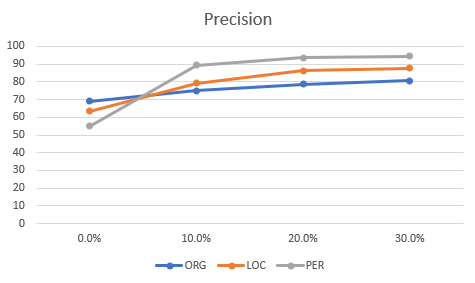
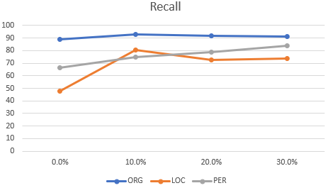
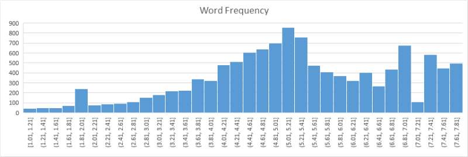

Named Entity and Rare Word Recognition
Table of Contents
- 1. Tasks
- 1.1. DONE Small labeling(200~)
- 1.2. DONE Literature Review
[100%][2/2] - 1.3. DONE WebPage(Link)
- 1.4. DONE Read reference code
[100%][3/3] - 1.5. DONE Model Evaluation(model:LSTM-CRF, train dataset:CoNLL2003, test dataset:CoNLL2003)
- 1.6. DONE Model Evaluation(model:LSTM-CRF, train dataset:CoNLL2003, test dataset:Lab-dataset)
- 1.7. DONE Model Evaluation(model:LSTM-CRF-Char-Conv, train dataset:Kaggle dataset, test dataset: Lab-dataset)
- 1.8. DONE Model Evaluation(model:LSTM-CRF-Char-Conv, train datatset:CoNLL2003, test dataset:CoNLL2003)
- 1.9. DONE Model Evaluation(model:LSTM-CRF-Char-Conv, train dataset:Kaggle dataset, test dataset:Kaggle dataset)
- 1.10. DONE Model Evaluation(model:LSTM-CRF-Char-Conv, train dataset:Lab-dataset(1000), test dataset:Lab-dataset(400))
- 1.11. DONE Model Evaluation(model:LSTM-CRF-Char-Conv, train dataset:Kaggle dataset(10000)+Lab-dataset(1000), test dataset:Lab-dataset(400))
- 1.12. DONE Model Evaluation(model:LSTM-CRF-Char-Conv, train dataset:Kaggle dataset(40000)+Lab-dataset(1000), test dataset:Lab-dataset(400))
- 1.13. DONE Model Evaluation(model:LSTM-CRF-Char-Conv)
- 1.14. TODO Labeling
[0%][0/3] - 1.15. DONE Revise the existing model(bi-lstm+crf)
[100%][2/2] - 1.16. TODO Model evaluation
- 1.17. TODO Rare word recognition
- 1.18. TODO Presentation type?
- 2. Literature Review
- 3. Model
- 4. Data Labeling
- 5. Rare word recognition
1 Tasks
1.1 DONE Small labeling(200~)
1.2 DONE Literature Review[100%][2/2]
1.2.1 DONE Neural Architectures for NER(Guillaume)
1.2.2 DONE Bidirectional LSTM-CRF Models for Sequence Tagging(Baidu research)
1.3 DONE WebPage(Link)
1.4 DONE Read reference code[100%][3/3]
1.4.1 DONE Word Embedding(reference code)
- use the tensorflow vocabulary lookup table to map token strings to ids
- reload a np.array containing some pre-trained vectors (glove) where the row index corresponds to a lexeme id
- perform a lookup in this array to get the embedding of every token
- apply dropout to the dense representation to prevent overfitting
1.4.2 DONE lstm(reference code)
- get the context representation by applying a bi-lstm on top of the token representation
1.4.3 DONE crf(reference code)
- decode the sentence using crf
1.5 DONE Model Evaluation(model:LSTM-CRF, train dataset:CoNLL2003, test dataset:CoNLL2003)
1.5.1 Overview
| sentences | 500 |
| tokens | 8356 |
| phrases | 663 |
| correct phrases | 481 |
| accuracy(with 'O') | 96.3% |
1.5.2 Each tag
| tag | precison | recall | f1 |
|---|---|---|---|
| LOC | 84.03% | 83.40% | 83.71 |
| ORG | 62.07% | 61.71% | 61.89 |
| PER | 62.96% | 83.33% | 71.73 |
| MISC | 73.63% | 75.28% | 74.44 |
1.6 DONE Model Evaluation(model:LSTM-CRF, train dataset:CoNLL2003, test dataset:Lab-dataset)
1.6.1 Overview
| sentences | 107 |
| tokens | 3084 |
| phrases | 243 |
| correct phrases | 19 |
| accuracy(with 'O') | 84.21% |
1.6.2 Each tag
| tag | precision | recall | f1 |
|---|---|---|---|
| LOC | 5.56% | 17.65% | 8.45 |
| ORG | 10.34% | 20.00% | 13.64 |
| PER | 7.14% | 22.22% | 10.81 |
| MISC | 4.44% | 9.52% | 6.06 |
1.7 DONE Model Evaluation(model:LSTM-CRF-Char-Conv, train dataset:Kaggle dataset, test dataset: Lab-dataset)
1.7.1 Overview
| sentences | 107 |
| tokens | 3084 |
| phrases | 86 |
| found | 144 |
| correct | 44 |
| accuracy | 93.19% |
1.7.2 Each tag
| tag | precison | recall | f1 |
|---|---|---|---|
| LOC | 13.46% | 41.18% | 20.29 |
| ORG | 52.24% | 58.33% | 55.12 |
| PER | 8.00% | 22.22% | 11.76 |
1.7.3 Matrix
| O | B-LOC | I-LOC | B-PER | I-PER | B-ORG | I-ORG | |
| O | 2732 | 28 | 2 | 10 | 7 | 18 | 14 |
| B-LOC | 1 | 7 | 0 | 2 | 3 | 3 | 1 |
| I-LOC | 8 | 1 | 6 | 0 | 7 | 0 | 0 |
| B-PER | 0 | 0 | 0 | 2 | 4 | 3 | 0 |
| I-PER | 0 | 0 | 0 | 0 | 6 | 0 | 11 |
| B-ORG | 9 | 2 | 0 | 1 | 0 | 1 | 1 |
| I-ORG | 19 | 6 | 6 | 10 | 22 | 3 | 81 |
1.8 DONE Model Evaluation(model:LSTM-CRF-Char-Conv, train datatset:CoNLL2003, test dataset:CoNLL2003)
1.8.1 Overview
| sentence | 500 |
| tokens | 8356 |
| phrases | 631 |
| found | 636 |
| correct | 548 |
| accuracy | 98.11% |
1.8.2 Each tag
| tag | precision | recall | f1 |
|---|---|---|---|
| LOC | 86.16% | 86.85% | 86.50 |
| ORG | 84.52% | 74.86% | 79.39 |
| PER | 82.30% | 91.18% | 86.51 |
| MISC | 86.21% | 84.27% | 85.23 |
1.9 DONE Model Evaluation(model:LSTM-CRF-Char-Conv, train dataset:Kaggle dataset, test dataset:Kaggle dataset)
1.9.1 Overview
| sentence | 2000+ |
| tokens | 61198 |
| phrases | 6685 |
| found | 6575 |
| correct | 5556 |
| accuracy | 96.92% |
1.9.2 Each tag
| tag | precision | recall | f1 |
|---|---|---|---|
| LOC | 87.05% | 93.59% | 90.20 |
| ORG | 78.64% | 66.17% | 71.87 |
| PER | 78.59% | 75.60% | 77.06 |
| MISC | 87.41% | 80.55% | 83.84 |
1.10 DONE Model Evaluation(model:LSTM-CRF-Char-Conv, train dataset:Lab-dataset(1000), test dataset:Lab-dataset(400))
1.10.1 Overview
| sentence | 400 |
| tokens | 9218 |
| phrases | 428 |
| found | 301 |
| correct | 196 |
| accuracy | 94.02% |
1.10.2 Each tag
| tag | precision | recall | f1 |
|---|---|---|---|
| LOC | 54.05% | 30.30% | 38.83 |
| ORG | 70.04% | 53.21% | 60.47 |
| PER | 37.04% | 20.00% | 25.97 |
1.11 DONE Model Evaluation(model:LSTM-CRF-Char-Conv, train dataset:Kaggle dataset(10000)+Lab-dataset(1000), test dataset:Lab-dataset(400))
1.11.1 Each tag
| tag | precision | recall |
|---|---|---|
| LOC | 83.82% | 79.72% |
| ORG | 89.72% | 80.80% |
| PER | 60.77% | 85.81% |
1.12 DONE Model Evaluation(model:LSTM-CRF-Char-Conv, train dataset:Kaggle dataset(40000)+Lab-dataset(1000), test dataset:Lab-dataset(400))
1.12.1 Overview
| sentence | 400+ |
| tokens | 9218 |
| phrases | 428 |
| found | 392 |
| correct | 338 |
| accuracy | 97.56% |
1.12.2 Each tag
| tag | precision | recall |
|---|---|---|
| LOC | 88.06% | 82.52% |
| ORG | 85.60% | 85.36% |
| PER | 89.19% | 89.19% |
1.12.3 Matrix
| predict-O | predict-LOC | predict-ORG | predict-PER | |
| actual-O | 8125 | 4 | 74 | 0 |
| actual-LOC | 8 | 121 | 14 | 0 |
| actual-ORG | 73 | 9 | 628 | 14 |
| actual-PER | 8 | 0 | 6 | 134 |
1.13 DONE Model Evaluation(model:LSTM-CRF-Char-Conv)
| Kaggle data | Lab data | Evaluation | ORG | LOC | PER |
|---|---|---|---|---|---|
| 10000 | 0 | precision | 69 | 63 | 55 |
| recall | 89 | 48 | 66 | ||
| 9000 | 1000 | precision | 75 | 79 | 89 |
| recall | 93 | 80 | 75 | ||
| 8000 | 2000 | precision | 78 | 86 | 93 |
| recall | 92 | 72 | 79 | ||
| 7000 | 3000 | precision | 80 | 87 | 94 |
| recall | 91 | 74 | 83 |
 
1.14 TODO Labeling[0%][0/3]
1.14.1 tagging shemes
- tag types?
- loc
- org
- per
- misc? which kind of entities should be labeled as misc? all nouns or interested nouns?
- use rule-based way to label
- date, numbers , percentage..
1.14.2 TODO Wang's part[14%][1/7]
1.14.3 TODO Liu's part[28%][2/7]
1.15 DONE Revise the existing model(bi-lstm+crf)[100%][2/2]
1.15.1 DONE Word embedding
- reference code use glove as word embedding, we can try other word embedding way to improve
1.15.2 DONE Model architecture
- adjust the lstm and crf architecture
- add layers
1.16 TODO Model evaluation
- we used to plan to compare the accuracy of stanford corenlp and the accuracy of our model. however, we found that stanford corenlp is too complex, and it's better to compare with other models(like lstm+crf, lstm, and so on)
1.17 TODO Rare word recognition
- by word frequency
1.18 TODO Presentation type?
- is it necessary to build a website or application to show the ner result? as this site: ner site
2 Literature Review
2.1 Neural Architectures for NER(Guillaume)
2.1.1 Model
- bidirectional LSTMs and CRF(*better)
- Stack LSTM
- the paper said the model learn from 2 source : supervised and unsupervised corpus
- the model are designed to capture 2 intuitions
- names often consist of multiple tokens, reasoning jointly over tagging decisions for each token is important
- token-level evidence for "being a name" includes both orthographic evidence(what does the word being tagged as a name look like?)(use character-based word representation model) and distributional evidence(where does the word being tagged tend to occur in a corpus?) combine these representations with distributional representations
2.1.2 LSTM
- input: a given sentence (\(x_1, x_2, ..., x_n\))
- \(x_n\) is represented as a d-dimensional vector
- an LSTM(forward LSTM) computes a representation \(\vec{h_t}\) of the left context of the sentence at every word \(t\).
- a second LSTM(backward LSTM) that reads the same sequence in reverse computes the right context \(\stackrel{\leftarrow}{h_t}\)
- the representation of a word using this model is obtained by concatenating its left and right context representations, \(h_t = [\vec{h_t};\stackrel{\leftarrow}{h_t}]\).
2.1.3 CRF
- the grammer that characterizes interpretable sequences of tags imposes several hard constraints(e.g., I-PER cannot follow B-LOC) that would be impossible to model with independence assumptions.
- for an input sentence
- consider \(P\) to be the matrix of scores output by the bidirectional LSTM network. \(P\) is of size \(n \times k\), where \(k\) is the number of distinct tags, and \(P_i,j\) corresponds to the score of the \(j^{th}\) tag of the \(i^{th}\) word in a sentence.
- for a sequence of predictions
- we define its score to be
- \(A\) is a matrix of transition scores such that \(A_{i,j}\) represents the score of a transition from the tag \(i\) to tag \(j\). &y0& and \(y_n\) are the \(start\) and \(end\) tags of a sentence, that we add to the set of possible tags.
- \(A\) is therefore a square matrix of size \(k+2\)
- a softmax over all possible tag sequences yields a probability for the sequence \(y\):
- during training, we maximizie the log-probability if the correct tag sequence
2.1.4 Parameterization and Training
- the scores associated with each tagging decision for each token (i.e., the \(P_(i,y)\)'s) are defined to be the dot product between the embedding of a word-in-context computed with a bidirectional LSTM
- the parameters of this model are thus the matrix of bigram compatibility scores \(A\), and the parameters that give rise to the matrix \(P\), namely the parameters of the bidirectional LSTM, the linear feature weights, and the word embeddings.
- the sequence of word embeddings is given as input to a bidirectional LSTM, which returns a representation of the left and right context for each word
- these representations are concatenated(\(c_i\)) and linearly projected onto a layer whose size is equal to the number of distinct tags.
- add a hidden layer between \(c_i\) and the CRF layer marginally improved the results
2.1.5 Tagging Schemes
- the paper use IOBES tagging scheme, because tagging a word as I-label with high-confidence narrows down the choices for the subsequent word to I-label or E-label
- however, there is no siginificant improvement over the IOB tagging scheme
2.1.6 Input Word Embeddings
- the input layers are vector representations of individual words
- Since many languages have orthographic or morphological evidence that something
- Character-based models of words
- learn character-level feature while training. Learning character-level embeddings has the advantage of learning representations specific to the task and domain at hand. They have been found useful for morphologically rich languages and to handle the out-of-vocabulary problem for tasks like part-of-speech tagging and language modeling or dependency parsing.
- generate a word embedding for a word from its characters. A character lookup table initialized at random contains an embedding for every character. The character embeddings corresponding to every character in a word are given in direct and reverse order to a forward and a backward LSTM. The embedding for a word derived from its characters is the concatenation of its forward and backward representations from the bidirectional LSTM.
- this character-level representation is then concatenated with a word-level representation from a word lookup-table.
- Pretrained embedding
- use pretrained word embeddings to initialized the lookup table. There is a significant improvements using pretrained word embeddings over randomly initialized ones. Embeddings are pretrained using skip-n-gram, a variation of word2vec that accounts for word order. These embeddings are fine-tuned during training.
- word embeddigs for English are trained using the English Gigaword version 4(with the LA Times and NY Times portions removed).
- use an embedding dimension of 100 for English
- Dropout training
- to encourage the model to depend on both representations, the paper uses dropout training, applying a dropout mask to the final embedding layer just before the input to the bidirectional LSTM. There is a significant improvement in the model's performance after using dropout.
2.1.7 Experiments
2.2 Bidirectional LSTM-CRF Models for Sequence Tagging(Baidu research)
2.2.1 Model
- LSTM
- BI-LSTM
- LSTM-CRF
- BI-LSTM-CRF
2.2.2 LSTM
| LSTM Cell | Function |
|---|---|
| input gate(it) | \(\sigma(W_{xi}x_t + W_{hi}h_{t-1} + W_{ci}c_{t-1} + b_i)\) |
| forget gate(ft) | \(\sigma(W_{xf}x_t + W_{hf}h_{t-1} + W_{cf}c_{t-1} + b_f)\) |
| output gate(ot) | \(\sigma(W_{xo}x_t + W_{ho}h_{t-1} + W_{co}c_{t} + b_o)\) |
| cell vector(ct) | \(f_{t}c_{t-1} + i_{t}tanh(W_{xc}x_t + W_{hc}h_(t-1) +b_c)\) |
| ht | \(o_{t}tanh(c_t)\) |
2.2.3 Bidirectional LSTM Networks
- using a bidirectional LSTM network can effiently make use of past features and future features for specific time frame
- train bidirectional LSTM using backpropagation through time (BPTT)
2.2.4 CRF Networks
- there are 2 ways to make use of neighbor tag information in predicting current tags
- the first is to predict a distribution of tags for each time step and then use beam-like decoding to find optimal tag sequences
- the second one is to focus on sentence level instead of individual positioins, thus leading to Conditional Random Fields (CRF) models
- the inputs and outputs are directly connected
2.2.5 LSTM-CRF Networks
- the network can efficiently use past input features via a LSTM layer and sentence level tag information via a CRF layer
- a CRF layer is represented by lines which connect-consecutive output layers
- With such a layer, we can efficiently use past and future tags to predict the current tag, which is similar to the use of past and future input features via a bidirectional LSTM network
2.2.6 Training procedure
- in each epoch, divide the whole training data to batches and process one batch at a time
- for each batch, first run bidirectional LSTM-CRF model forward pass which includes the forward pass for both forward state and backward state of LSTM. As a result, we get the output score for all tags at all positions
- then run CRF layer forward and backward pass to compute gradients for network output and state transition edges
- after that, back propogate the errors from the output to the input, which includes the backward pass for both forward and backward states of LSTM
- finally, update the network parameters which include the state transition matrix \(A\), and the original bidirectional LSTM parameters \(\theta\)
| step | training procedure |
|---|---|
| 1 | bidirectional LSTM-CRF model forward pass: forward pass for forward state LSTM and forward pass for backward state LSTM |
| 2 | CRF layer forward and backward pass |
| 3 | bidirectional LSTM-CRF model backward pass: backward pass for forward state LSTM and backward pass for backward state LSTM |
| 4 | update parameter |
2.2.7 Experiments
- Word embedding
- it has been shown in that word embedding plays a vital role to improve sequence tagging performance
3 Model
3.1 Word Embedding
3.1.1 Glove.840B.300D
- GloVe is an unsupervised learning algorithm for obtaining vector representations for words. We extract all words from the training set and assign the GloVe'embedding to each of them, then store the result as glove.npz
- create vocab.words.txt, vocab.tags.txt, vocab.chars.txt to store the distinct words, tags, and chars
- map the embedding in glove.840B.300D to the distinct words in vocab.words.txt, and create glove.npz to store the result
3.1.2 Problem
- initial matrix is zero-matrix now. If the GloVe corpus doesn't contain these words, these words will have a same representation
3.2 LSTM
4 Data Labeling
4.2 Preprocess
4.2.1 Kaggle Kaggle Link
- find ".,O", replace it with ".aaaaaa,Oaaaaaa"(Notepad)
- open with Excel, find the word's column and tag's column and save in distinct .csv file
- find "\r\n", replace it with " "
- find "aaaaaa ", replace it with "\r\n"
- find "geo", replace it with "LOC"
- find "gpe", replace it with "LOC"
- find "org", replace it with "ORG"
- find "per", replace it with "PER "
- find "tim" and "art", replace it with "MISC"
4.2.2 Pre-label
- use model to pre-label the lab-dataset
- find "\r\r", replace it with "aaaaaa"
- find "\r", replace it with " "
- find "aaaaaa", replace it with "\r\r"
4.2.3 Double check
- Don't label "the"
- Delete the Special symbol(data cleaning)
- Split the words that connected with " "(e.g. "(2014)")
- reference NER software
5 Rare word recognition
5.1 Frequency Distribution Chart


5.2 Rare word recognition rules:
- Word Frequency < 2.0
- Not digit(e.g., flight number, law's name), not chinese character
- Length > 8()
5.3 Issue
- Wrong words will be labeled as rare word(e.g., supervisions(supervision), shortterm(short-term), realisable(realizable))